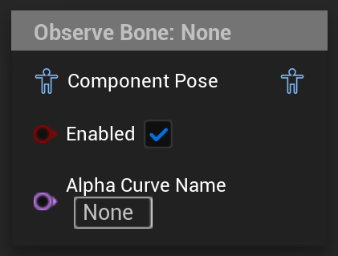

Observe Bone
Displays debug information for a specified bone
UAnimGraphNode_ObserveBone
FAnimNode_ObserveBone

Displays debug information about a bone that can be specified in the detail panel. After compiling the AnimBP with a valid bone, it will display the debug information in two ways: In the graph and in the 3D viewport
In the graph, the node will add a text bubble above the node itself, that displays translation, rotation and scale of the bone as text. This information is displayed in the relevant display space configured in the details panel and can be displayed relative to the ref pose.
In the 3D viewport, the node wil add a translation gizmo that moves with the bone, as long as the node is selected in the graph. This gizmo does not allow edits and is just a visualization. By default, this gizmo will be aligned with the world axes, but it can be switched to be aligned with the local rotation. As of UE5.3 though, this resets itself back to world alignment when the AnimBP is compiled.
Both the “Enabled” and “Alpha Curve Name” pins don’t have an effect.
They are part of the alpha configuration, because both variables are exposed as pins by default from FAnimNode_SkeletalControlBase, the parent class of FAnimNode_ObserveBone, eventhough the node does not modify anything and as such does not need alpha settings.
If desired they can be disabled per node by switching the alpha input type to Anim Curve Value and Bool Value and disabling the corresponding pins in the details panel.